공조냉동기계기능사 (2009-03-29 기출문제)
1과목: 공조냉동안전관리
1. 작업자의 안전태도를 형성하기 위한 가장 유효한 방법은?
- 안전에 관한 훈시
- 안전한 환경의 조성
- 안전 표지판의 부착
- 안전에 관한 교육실시
(정답률: 89%)

2. 안전관리자의 직무에 해당하지 않는 것은?
- 산업재해 발생의 원인조사 및 재발방지를 위한 기술적 지도, 조언
- 안전에 관한 조직편성 및 예산책정
- 안전에 관련된 보호구의 구입시 적격품 선정
- 당해 사업장 안전교육 계획의 수립 및 실시
(정답률: 83%)
3. 공구취급 안전관리 일반사항으로 옳지 않은 것은?
- 결함이 없는 완전한 공구를 사용한다.
- 공구는 사용 전에 반드시 점검한다.
- 불량공구는 일단 수리하여 사용하고 반납한다.
- 공구는 항상 일정한 장소에 비치하여 놓는다.
(정답률: 97%)
4. 냉동설비 사업소의 경계표지 방법으로 적당한 것은?
- 사업소의 경계표지는 출입구를 제외한 울타리, 담 등에 게시할 것
- 이동식 냉동 설비에는 표시를 생략할 것
- 외부사람이 명확하게 식별할 수 있는 크기로 할 것
- 당해 시설에 접근할 수 있는 장소가 여러 방향 일 때는 대표적인 장소에만 게시할 것
(정답률: 83%)
5. 산업안전의 관심과 이해증진으로 얻을 수 있는 이점이라 볼 수 없는 것은?
- 기업의 신뢰도를 높여준다.
- 기업의 투자경비를 증대시킬 수 있다.
- 이직률이 감소된다.
- 고유기술 축적으로 품질이 향상되어진다.
(정답률: 66%)
6. 가스집합 용접장치를 사용하여 금속의 용접ㆍ용단 및 가열작업을 하는 때에 가스집합 용접장치의 관리상 준수하여야 하는 사항이 아닌 것은?
- 사용하는 가스의 명칭 및 최대가스저장량을 가스장치실의 보기 쉬운 장소에 게시할 것
- 밸브 · 콕 등의 조작 및 점검요령을 가스장치실의 보기 쉬운 장소에 게시할 것
- 가스집합장치로부터 5m 이내의 장소에서는 흡연, 화기의 사용 또는 불꽃을 발생시킬 우려가 있는 행위를 금지시킬 것
- 이동식 가스집합 용접장치는 고온의 장소, 통풍이나 환기가 불충분한 장소 또는 진동이 많은 장소에 설치하여 사용할 것
(정답률: 87%)
7. 냉동장치 취급에 있어서 안전관리를 위한 사항이 아닌 것은?
- 고압가스 안전관리에 관계되는 법규를 이해한다.
- 안전검사를 위하여 구체적인 계획을 세우고, 실천해야 한다.
- 냉매의 특성을 이해하는 것은 안전관리에 별 다른 도움을 주지 않는다.
- 압력계, 온도계, 전류계 등 각종 계기의 수치와 단위에 대하여 이해한다.
(정답률: 92%)
8. 교류 용접기의 규격란에 AW 200이라고 표시되어 있을 때 200이 나타내는 값은?
- 정격 1차 전류값
- 정격 2차 전류값
- 1차 전류 최대값
- 2차 전류 최대값
(정답률: 81%)
9. 근로자가 안전하게 통행할 수 있도록 통로에는 몇 럭스 이상의 조명시설을 해야 하는가?
- 10
- 30
- 45
- 75
(정답률: 79%)
10. 가연성가스 또는 가연성 분진 등이 체류하는 장소에 설치해야 하는 것으로 옳은 것은?
- 진동설비
- 배수설비
- 소음설비
- 환기설비
(정답률: 96%)
11. 가스보일러의 점화전 주의사항 중 연소실 용적의 약 몇 배 이상의 공기량을 보내어 충분히 환기를 행해야 되는가?
- 2
- 4
- 6
- 8
(정답률: 74%)
12. 발화온도가 낮아지는 조건과 관계없는 것은?
- 발열량이 높을수록 발화온도는 낮아진다.
- 분자구조가 간단할수록 발화온도는 낮아진다.
- 압력이 높을수록 발화온도는 낮아진다.
- 산소농도가 높을수록 발화온도는 낮아진다.
(정답률: 54%)
13. 가스용접장치에 대한 안전수칙으로 틀린 것은?
- 가스용기의 밸브는 빨리 열고 닫는다.
- 가스의 누설검사는 비눗물로 한다.
- 용접작업 전에 소화기 및 방화사 등을 준비한다.
- 역화의 위험을 방지하기 위하여 역화방지기를 설치하여 역화를 방지한다.
(정답률: 92%)
14. 가스 용접 작업에서 일어날 수 있는 재해가 아닌 것은?
- 화재
- 전격
- 폭발
- 중독
(정답률: 89%)
15. 전기의 접지 목적에 해당되지 않는 것은?
- 화재방지
- 설비증설방지
- 감전방지
- 기기손상방지
(정답률: 88%)
2과목: 냉동기계
16. 절대압력과 게이지압력과의 관계식으로 옳은 것은?
- 절대압력 = 대기압력 ＋ 게이지압력
- 절대압력 = 대기압력 - 게이지압력
- 절대압력 = 대기압력 × 게이지압력
- 절대압력 = 대기압력 ÷ 게이지압력
(정답률: 77%)
17. 오옴의 법칙에 대한 설명 중 옳은 것은?
- 전류는 전압에 비례한다.
- 전류는 저항에 비례한다.
- 전류는 전압의 2승에 비례한다.
- 전류는 저항의 2승에 비례한다.
(정답률: 72%)
18. 가용전(fusible plug)에 대한 설명으로 틀린 것은?
- 프레온장치의 수액기, 응축기 등에 사용한다.
- 용융점은 냉동기에서 68~75℃이하로 한다.
- 구성 성분은 주석, 구리, 납으로 되어 있다.
- 토출가스의 영향을 직접 받지 않는 곳에 설치해야 한다.
(정답률: 81%)
19. 다음 중 압축기와 관계없는 효율은?
- 체적효율
- 기계효율
- 압축효율
- 팽창효율
(정답률: 71%)
20. 다음 중 액순환식 증발기와 액펌프 사이에 부착하는 것은?
- 감압밸브
- 여과기
- 역지밸브
- 건조기
(정답률: 56%)
21. 반가산기의 더한 합 S와 자리올림 C에 대한 논리식이 적절하게 설명된 것은?
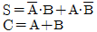
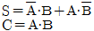
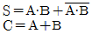
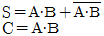
(정답률: 45%)
22. 열에 관한 다음 사항 중 틀린 것은?
- 감열은 건구온도계로서 측정할 수 있다.
- 잠열은 물체의 상태를 바꾸는 작용을 하는 열이다.
- 감열은 상태변화 없이 온도변화에 필요한 열이다.
- 융해열은 감열의 일종이며, 고체를 액체로 바꾸는데 필요한 열이다.
(정답률: 66%)
23. 암모니아 냉동장치에서 실린더 직경 150㎜, 행정이 90㎜, 회전수 1,170rpm, 기통수 6기통 일 때, 법정 냉동능력(RT)은? (단, 냉매상수는 8.4이다.)
- 98.2
- 79.7
- 59.2
- 38.9
(정답률: 60%)
24. 제빙 장치에서 브라인의 온도가 -10℃이고, 결빙소요시간이 48시간일 때 얼음의 두께는 약 몇 ㎜인가? (단, 결빙계수는 0.56이다.)
- 253㎜
- 273㎜
- 293㎜
- 313㎜
(정답률: 42%)
25. 냉동기에 사용하는 윤활유의 구비조건으로서 틀린 것은?
- 불순물을 함유하지 않을 것
- 인화점이 높을 것
- 냉매와 분리되지 않을 것
- 응고점이 낮을 것
(정답률: 76%)
26. 전류 I, 시간 t, 전기량 Q라고 할 때 전기량은?
- Q = I·t
- Q = I/t
- Q = t/I
- Q = 1/[I·t]
(정답률: 67%)
27. 브라인 부식 방지처리에 관한 설명으로 틀린 것은?
- 공기와 접촉하면 부식성이 증대하므로 공기와 접촉하지 않는 순환 방식을 채택한다.
- CaCl2브라인 1ℓ에는 중크롬산소다 1.6g을 첨가하고 중크롬산소다 100g마다 가성소다 27g씩 첨가한다.
- 브라인은 산성을 띠게 되면 부식성이 커지므로 PH 7.5~8.2로 유지되도록 한다.
- NaCl브라인 1ℓ에 대하여 중크롬산소다 0.6g을 첨가하고 중크롬산소다 100g마다 가성소다 2.7g씩 첨가한다.
(정답률: 73%)
28. 관이음 KS(B 0063) 도시기호 중 틀린 것은?
- 플랜지 이음 :
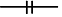
- 소켓 이음 :
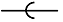
- 유니언 이음 :
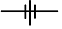
- 용접 이음 :
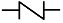
(정답률: 83%)
29. 나사식 강관 이음쇠에 대한 설명 중 옳은 것은?
- 소구경(小口經)이고 저압의 파이프에 사용한다.
- 충격, 진동, 부식 등이 생기 우려가 있는 곳에 사용한다.
- 저압 대구경의 파이프에 사용한다.
- 파이프의 분기점에는 사용해서는 안 된다.
(정답률: 61%)
30. 표준 냉동사이클에서 과냉각도는 얼마인가?
- 45℃
- 30℃
- 15℃
- 5℃
(정답률: 78%)
31. 아래 그림에서 온도식 자동팽창밸브의 감온통 부착 위치로 가장 적당한 곳은?
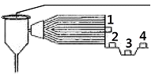
- 1
- 2
- 3
- 4
(정답률: 78%)
32. 간접팽창식과 비교한 직접팽창식 냉동장치의 설명이 아닌 것은?
- 소요동력이 적다.
- 냉동톤(RT)당 냉매 순환량이 적다.
- 감열에 의해 냉각시키는 방법이다.
- 냉매 증발 온도가 높다.
(정답률: 53%)
33. 냉동장치 운전 중 유압이 이상저하 되었다. 원인으로 옳은 것은?
- 유온이 너무 낮을 때
- 오일배관계통이 막혀있을 때
- 유압조정밸브 개도가 과소할 때
- 크랑크케이스 내의 유여과기가 막혀 있을 때
(정답률: 33%)
34. 다음 중 흡수식 냉동기의 특징이 아닌 것은?
- 운전시의 소음 및 진동이 거의 없다.
- 증기, 온수 등 배열을 이용할 수 있다.
- 압축식에 비해서 설치면적 및 중량이 크다.
- 압축식에 비해 예냉시간이 짧다.
(정답률: 45%)
35. 다음 중 체적 압축식 냉동장치에 해당되지 않는 것은?
- 스크류식 냉동기
- 회전식 냉동기
- 흡수식 냉동기
- 왕복동식 냉동기
(정답률: 73%)
36. 냉매 배관의 시공에 대한 설명 중 맞지 않는 것은?
- 기기 상호간의 길이는 가능한 길게 한다.
- 관의 가공에 의한 재질의 변질을 최소화 한다.
- 압력손실은 지나치게 크지 않도록 한다.
- 냉매의 온도와 압력에 충분히 견딜 수 있어야 한다.
(정답률: 90%)
37. 수냉식 응축기의 응축압력에 관한 설명 중 옳은 것은?
- 수온이 일정한 경우 유막 물때가 두껍게 부착 하여도 수량을 증가하면 응축압력에는 영향이 없다.
- 냉각관내의 냉각수 속도는 열통과율에 영향을 준다.
- 냉각수량이 풍부한 경우에는 불응축가스의 혼입 영향은 없다.
- 냉각수량이 일정한 경우에는 수온에 의한 영향은 없다.
(정답률: 54%)
38. 이원 냉동사이클에 사용되는 냉매 중 저온측 냉매로 가장 적당한 것은?
- R-11
- R-12
- R-21
- R-13
(정답률: 44%)
39. 터보 압축기의 특징으로 맞지 않는 것은?
- 임펠러에 의한 원심력을 이용하여 압축한다.
- 응축기에서 가스가 응축하지 않을 경우 이상 고압이 발생한다.
- 부하가 감소하면 서징을 일으킨다.
- 진동이 적고, 1대로도 대용량이 가능하다.
(정답률: 38%)
40. 다음 중 불에 잘 타지 않으며, 보온성, 보냉성이 좋고 흡수성은 좋지 않으나 굽힘성이 풍부한 유기질 보온재는?
- 기포성수지
- 콜크
- 우모펠트
- 유리섬유
(정답률: 53%)
41. 다음 중 암모니아 냉매의 특성에 속하지 않는 것은?
- 폭발 및 가연성이 있다.
- 독성이 있다.
- 사용되는 냉매 중 증발잠열이 가장 작다.
- 물에 잘 용해된다.
(정답률: 79%)
42. 지열을 이용하는 열펌프(Heat Pump)의 종류가 아닌 것은?
- 엔진구동 열펌프(GHP)
- 지하수 이용 열펌프(GWHP)
- 지표수 이용 열펌프(SWHP)
- 지중열 이용 열펌프(GCHP)
(정답률: 87%)
43. 다음은 2단압축 2단팽창 냉동사이클을 몰리엘 선도에 표시한 것이다. 옳은 것은?
- 중간냉각기의 냉동효과 : ③~⑦
- 증발기의 냉동효과 : ②~⑨
- 팽창변 통과직후의 냉매위치 : ⑦~⑨
- 응축기의 방출열량 : ⑧~②
(정답률: 67%)
44. 압축기 운전상태가 다음 P-h선도와 같이 나타났을 때 냉동능력은 약 몇 RT인가? (단, 피스톤 압출량은 350m3/h이고, 압축기의 체적효율은 75%이다.)
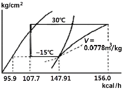
- 30.57
- 40.86
- 50.57
- 60.86
(정답률: 49%)
45. 회전식 압축기의 특징 설명으로 틀린 것은?
- 용량제어가 없고, 분해조립 및 정비에 특수한 기술이 필요하다.
- 대형압축기와 저온용 압축기로 사용하기 적당하다.
- 왕복동식처럼 격간이 없어 체적효율, 성능계수가 양호하다.
- 소형이고 설치면적이 적다.
(정답률: 56%)
3과목: 공기조화
46. 다음의 습공기 선도에 나타낸 공기의 상태점에서 노점온도는?
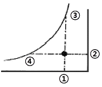
- ①
- ②
- ③
- ④
(정답률: 50%)
47. 가습팬에 의한 가습장치의 설명으로 틀린 것은?
- 온수가열용에는 증기 또는 전기가열기가 사용된다.
- 가습장치 중 효율이 가장 우수하다.
- 응답속도가 느리다.
- 패키지 등의 소형 공조기에 사용한다.
(정답률: 58%)
48. "강제순환식 온수난방에서는 순환펌프의 양정이 그대로 온수의 ( )가(이) 된다." 괄호 안에 적당한 용어는?
- 비중량
- 순환량
- 순환수두
- 마찰계수
(정답률: 55%)
49. 건구온도 30℃, 상대습도 50%인 습공기 500m3/h를 냉각코일에 의하여 냉각한다. 냉각코일의 표면온도는 10℃이고 바이패스 팩터가 0.1이라면 냉각된 공기의 온도(℃)는 얼마인가?
- 10
- 12
- 24
- 28
(정답률: 54%)
50. 공기조화에 관한 설명으로 틀린 것은?
- 공기조화는 일반적으로 보건용 공기조화와 산업용 공기조화로 대별된다.
- 공장, 연구소, 전산실 등과 같은 곳은 보건용 공기조화이다.
- 보건용 공조는 실내 인원에 대한 쾌적 환경을 만드는 것을 목적으로 한다.
- 산업용 공조는 생산 공정이나 물품의 환경조성을 목적으로 한다.
(정답률: 86%)
51. 각종 공조방식 중에서 개별공조방식의 장점으로 틀린 것은?
- 개별제어가 가능하다.
- 실내 유닛이 분리되어 있지 않는 경우 소음과 진동이 있다.
- 취급이 용이하다.
- 외기냉방이 용이하다.
(정답률: 70%)
52. 장방형 저속덕트의 장변의 길이가 850㎜일 때, 시공하여야 할 아연도 강판의 두께로 적당한 것은?
- 0.3㎜
- 0.5㎜
- 0.8㎜
- 1.2㎜
(정답률: 53%)
53. 다음의 난방방식 중 방열체가 필요 없는 것은?
- 온수난방
- 증기난방
- 복사난방
- 온풍난방
(정답률: 63%)
54. 공기조화설비 중에서 열원장치의 구성 요소가 아닌 것은?
- 냉각탑
- 냉동기
- 보일러
- 덕트
(정답률: 74%)
55. 이중 덕트방식에 대한 설명으로 틀린 것은?
- 실의 냉난방 부하가 감소되어도 취출공기의 부족현상은 없다.
- 실내부하에 따라 각실 제어나 존(Zone)별 제어가 가능하다.
- 방의 설계변경이나 완성 후 용도변경에도 쉽게 대처할 수 있다.
- 단일 덕트방식에 비해 에너지 소비량이 적다.
(정답률: 65%)
56. 공기선도에 관한 아래 그림에서 구성요소의 연결이 올바르게 된 것은?
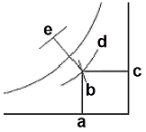
- a : 건구온도, b : 비체적, c : 노점온도
- a : 습구온도, c : 절대습도, d : 엔탈피
- b : 비체적, c : 절대습도, e : 엔탈피
- c : 상대습도, d : 절대습도, e : 열수분비
(정답률: 61%)
57. HEPA필터의 성능시험 방법으로 적당한 것은?
- 중량법
- 변색도법
- DOP법
- 여과법
(정답률: 59%)
58. 1KW를 열량으로 환산하면 몇 kcal/h인가?
- 860
- 750
- 632
- 427
(정답률: 68%)
59. 기계환기 중 1종 환기(병용식)인 것은?
- 강제급기와 강제배기
- 강제급기와 자연배기
- 자연급기와 강제배기
- 자연급기와 자연배기
(정답률: 79%)
60. 공기 세정기에서 물방울이 출구공기에 섞여 나가는 것을 방지하는 비산방지장치는?
- 루버
- 분무노즐
- 플러딩노즐
- 엘리미네이터
(정답률: 66%)